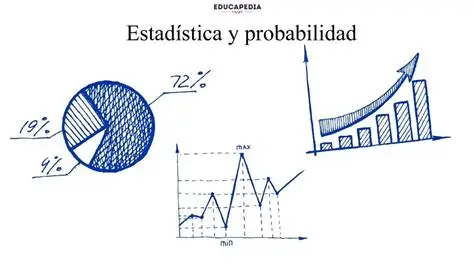

PROBABILIDAD Y ESTADISTICAS
La materia de Probabilidad Y Estaditicas trata sobre el estudio de fenómenos aleatorios y la interpretación de datos. Su propósito es brindar herramientas para analizar la incertidumbre, describir patrones y tomar decisiones fundamentadas. La probabilidad se enfoca en calcular la posibilidad de que ocurran ciertos eventos, mientras que la estadística se ocupa de recopilar, organizar y resumir información para extraer conclusiones. En conjunto, permiten comprender mejor la realidad a través de números y modelos, aplicándose en áreas tan diversas como la ciencia, la economía, la ingeniería y la vida cotidiana algunos ejemplos de ello son.
- Al lanzar un dado, la probabilidad de que salga un número 6 es 1/6.
- Al sacar una carta de una baraja, la posibilidad de que sea un as es 4/52.
- Si en una clase 10 alumnos sacaron estas calificaciones: 8, 9, 7, 6, 10, 9, 8, 7, 6, 10, el promedio es 8.
- En una encuesta, 60 personas prefieren pizza y 40 prefieren hamburguesa; se concluye que el 60% prefiere pizza.
-
Me fue impartida por el maestro Jose Alfredo Cuytum, ha sido una materia que nos comparte nuevos metodos con un objetivo de buscar sacar las probabilidades de ciertas situaciones como, el entorno de una poblacion y con una muestra haces diferentes tipos de procesos para para encontar el porcentaje de cierta situacion entre eso ussamos diferentes metodos por ejemplo:
- Probabilidad Condicional
- Combinaciones
- Teorema de Bayes
- Distribucion Binomial
- Distribucion Normal
